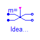
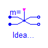
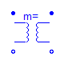
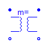
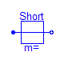
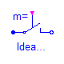
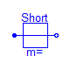
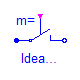
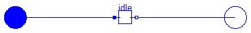

 

 




This package contains analog electrical multiphase components with idealized behaviour, like thyristor, diode, switch, transformer.
| Name | Description |
|---|---|
| IdealThyristor | Multiphase ideal thyristor |
| IdealGTOThyristor | Multiphase ideal GTO thyristor |
| IdealCommutingSwitch | Multiphase ideal commuting switch |
| IdealIntermediateSwitch | Multiphase ideal intermediate switch |
| IdealDiode | Multiphase ideal diode |
| IdealTransformer | Multiphase ideal transformer |
| Idle | Multiphase idle branch |
| Short | Multiphase short cut branch |
| IdealOpener | Multiphase ideal opener |
| IdealCloser | Multiphase ideal closer |

Contains m ideal transformers (Modelica.Electrical.Analog.Ideal.IdealTransformer).
| Name | Default | Description |
|---|---|---|
| m | 3 | number of phases |
| n[m] | fill(1, m) | Turns ratio |
model IdealTransformer "Multiphase ideal transformer"
extends Interfaces.FourPlug;
parameter Real n[m]=fill(1, m) "Turns ratio";
Modelica.Electrical.Analog.Ideal.IdealTransformer idealTransformer[
m](
final n=n);
equation
connect(plug_p1.pin, idealTransformer.p1);
connect(plug_p2.pin, idealTransformer.p2);
connect(plug_n1.pin, idealTransformer.n1);
connect(plug_n2.pin, idealTransformer.n2);
end IdealTransformer;
Modelica.Electrical.MultiPhase.Ideal.IdealDiode

Contains m ideal diodes (Modelica.Electrical.Analog.Ideal.IdealDiode).
| Name | Default | Description |
|---|---|---|
| m | 3 | number of phases |
| Roff[m] | fill(1.E-5, m) | Closed diode resistance [Ohm] |
| Gon[m] | fill(1.E-5, m) | Opened diode conductance [S] |
| Vknee[m] | zeros(m) | Treshold voltage [V] |
model IdealDiode "Multiphase ideal diode"
extends Interfaces.TwoPlug;
parameter Modelica.SIunits.Resistance Roff[ m](final min=zeros(m)) = fill(
1.E-5, m) "Closed diode resistance";
parameter Modelica.SIunits.Conductance Gon[ m](final min=zeros(m)) = fill(
1.E-5, m) "Opened diode conductance";
parameter Modelica.SIunits.Voltage Vknee[ m](final min=zeros(m)) = zeros(m)
"Treshold voltage";
Modelica.Electrical.Analog.Ideal.IdealDiode idealDiode[
m](final Roff=Roff,
final Gon=Gon, final Vknee=Vknee);
equation
connect(plug_p.pin, idealDiode.p);
connect(idealDiode.n, plug_n.pin);
end IdealDiode;

Contains m ideal thyristors (Modelica.Electrical.Analog.Ideal.IdealThyristor).
| Name | Default | Description |
|---|---|---|
| m | 3 | number of phases |
| Roff[m] | fill(1.E-5, m) | Closed thyristor resistance [Ohm] |
| Gon[m] | fill(1.E-5, m) | Opened thyristor conductance [S] |
| Vknee[m] | zeros(m) | Treshold voltage [V] |
model IdealThyristor "Multiphase ideal thyristor"
extends Interfaces.TwoPlug;
parameter Modelica.SIunits.Resistance Roff[ m](final min=zeros(m)) = fill(
1.E-5, m) "Closed thyristor resistance";
parameter Modelica.SIunits.Conductance Gon[ m](final min=zeros(m)) = fill(
1.E-5, m) "Opened thyristor conductance";
parameter Modelica.SIunits.Voltage Vknee[ m](final min=zeros(m)) = zeros(m)
"Treshold voltage";
Modelica.Blocks.Interfaces.BooleanInPort firePort(
final n=m);
Modelica.Electrical.Analog.Ideal.IdealThyristor idealThyristor[
m](final Roff=
Roff, final Gon=Gon, final Vknee=Vknee);
equation
idealThyristor.firePort.signal[1] = firePort.signal;
connect(plug_p.pin, idealThyristor.p);
connect(idealThyristor.n, plug_n.pin);
end IdealThyristor;
Modelica.Electrical.MultiPhase.Ideal.IdealGTOThyristor

Contains m ideal GTO thyristors (Modelica.Electrical.Analog.Ideal.IdealGTOThyristor).
| Name | Default | Description |
|---|---|---|
| m | 3 | number of phases |
| Roff[m] | fill(1.E-5, m) | Closed thyristor resistance [Ohm] |
| Gon[m] | fill(1.E-5, m) | Opened thyristor conductance [S] |
| Vknee[m] | zeros(m) | Treshold voltage [V] |
model IdealGTOThyristor "Multiphase ideal GTO thyristor"
extends Interfaces.TwoPlug;
parameter Modelica.SIunits.Resistance Roff[ m](final min=zeros(m)) = fill(
1.E-5, m) "Closed thyristor resistance";
parameter Modelica.SIunits.Conductance Gon[ m](final min=zeros(m)) = fill(
1.E-5, m) "Opened thyristor conductance";
parameter Modelica.SIunits.Voltage Vknee[ m](final min=zeros(m)) = zeros(m)
"Treshold voltage";
Modelica.Blocks.Interfaces.BooleanInPort firePort(
final n=m);
Modelica.Electrical.Analog.Ideal.IdealGTOThyristor idealGTOThyristor[
m](
final Roff=Roff, final Gon=Gon, final Vknee=Vknee);
equation
idealGTOThyristor.firePort.signal[1] = firePort.signal;
connect(idealGTOThyristor.p, plug_p.pin);
connect(idealGTOThyristor.n, plug_n.pin);
end IdealGTOThyristor;
Modelica.Electrical.MultiPhase.Ideal.IdealCommutingSwitch

Contains m ideal commuting switches (Modelica.Electrical.Analog.Ideal.IdealCommutingSwitch).
| Name | Default | Description |
|---|---|---|
| m | 3 | number of phases |
| Ron[m] | fill(1.E-5, m) | Closed switch resistance [Ohm] |
| Goff[m] | fill(1.E-5, m) | Opened switch conductance [S] |
model IdealCommutingSwitch "Multiphase ideal commuting switch"
parameter Integer m(final min=1) = 3 "number of phases";
parameter Modelica.SIunits.Resistance Ron[ m](final min=zeros(m)) = fill(
1.E-5, m) "Closed switch resistance";
parameter Modelica.SIunits.Conductance Goff[ m](final min=zeros(m)) = fill(
1.E-5, m) "Opened switch conductance";
Modelica.Blocks.Interfaces.BooleanInPort control(
final n=m);
Interfaces.PositivePlug plug_p(
final m=m);
Interfaces.NegativePlug plug_n2(
final m=m);
Interfaces.NegativePlug plug_n1(
final m=m);
Modelica.Electrical.Analog.Ideal.IdealCommutingSwitch idealCommutingSwitch[
m](final Ron=Ron, final Goff=Goff);
equation
idealCommutingSwitch.control.signal[1] = control.signal;
connect(plug_p.pin, idealCommutingSwitch.p);
connect(idealCommutingSwitch.n2, plug_n2.pin);
connect(idealCommutingSwitch.n1, plug_n1.pin);
end IdealCommutingSwitch;

Contains m ideal intermediate switches (Modelica.Electrical.Analog.Ideal.IdealIntermediateSwitch).
| Name | Default | Description |
|---|---|---|
| m | 3 | number of phases |
| Ron[m] | fill(1.E-5, m) | Closed switch resistance [Ohm] |
| Goff[m] | fill(1.E-5, m) | Opened switch conductance [S] |
model IdealIntermediateSwitch "Multiphase ideal intermediate switch"
parameter Integer m(final min=1) = 3 "number of phases";
parameter Modelica.SIunits.Resistance Ron[ m](final min=zeros(m)) = fill(
1.E-5, m) "Closed switch resistance";
parameter Modelica.SIunits.Conductance Goff[ m](final min=zeros(m)) = fill(
1.E-5, m) "Opened switch conductance";
Modelica.Blocks.Interfaces.BooleanInPort control(
final n=m);
Interfaces.PositivePlug plug_p1(
final m=m);
Interfaces.PositivePlug plug_p2(
final m=m);
Interfaces.NegativePlug plug_n2(
final m=m);
Interfaces.NegativePlug plug_n1(
final m=m);
Modelica.Electrical.Analog.Ideal.IdealIntermediateSwitch
idealIntermediateSwitch[m](final Ron=Ron, final Goff=Goff);
equation
idealIntermediateSwitch.control.signal[1] = control.signal;
connect(plug_p2.pin, idealIntermediateSwitch.p2);
connect(idealIntermediateSwitch.n2, plug_n2.pin);
connect(idealIntermediateSwitch.p1, plug_p1.pin);
connect(idealIntermediateSwitch.n1, plug_n1.pin);
end IdealIntermediateSwitch;
Modelica.Electrical.MultiPhase.Ideal.Idle
Contains m idles (Modelica.Electrical.Analog.Ideal.Idle)
| Name | Default | Description |
|---|---|---|
| m | 3 | number of phases |
model Idle "Multiphase idle branch"
extends Interfaces.TwoPlug;
Modelica.Electrical.Analog.Ideal.Idle idle[
m];
equation
connect(plug_p.pin, idle.p);
connect(idle.n, plug_n.pin);
end Idle;

Contains m short cuts (Modelica.Electrical.Analog.Ideal.Short)
| Name | Default | Description |
|---|---|---|
| m | 3 | number of phases |
model Short "Multiphase short cut branch"
extends Interfaces.TwoPlug;
Modelica.Electrical.Analog.Ideal.Short short[
m];
equation
connect(plug_p.pin, short.p);
connect(short.n, plug_n.pin);
end Short;

Contains m ideal opening switches (Modelica.Electrical.Analog.Ideal.IdealOpener).
| Name | Default | Description |
|---|---|---|
| m | 3 | number of phases |
| Ron[m] | fill(1.E-5, m) | Closed switch resistance [Ohm] |
| Goff[m] | fill(1.E-5, m) | Opened switch conductance [S] |
model IdealOpener "Multiphase ideal opener"
extends Interfaces.TwoPlug;
parameter Modelica.SIunits.Resistance Ron[ m](final min=zeros(m)) = fill(
1.E-5, m) "Closed switch resistance";
parameter Modelica.SIunits.Conductance Goff[ m](final min=zeros(m)) = fill(
1.E-5, m) "Opened switch conductance";
Modelica.Blocks.Interfaces.BooleanInPort control(
final n=m);
Modelica.Electrical.Analog.Ideal.IdealOpener idealOpener[
m](final Ron=Ron,
final Goff=Goff);
equation
idealOpener.control.signal[1] = control.signal;
connect(plug_p.pin, idealOpener.p);
connect(idealOpener.n, plug_n.pin);
end IdealOpener;
Modelica.Electrical.MultiPhase.Ideal.IdealCloser

Contains m ideal closing switches (Modelica.Electrical.Analog.Ideal.IdealCloser).
< /HTML>Error:Found no end-tag in HTML-documentation
| Name | Default | Description |
|---|---|---|
| m | 3 | number of phases |
| Ron[m] | fill(1.E-5, m) | Closed switch resistance [Ohm] |
| Goff[m] | fill(1.E-5, m) | Opened switch conductance [S] |
model IdealCloser "Multiphase ideal closer"
extends Interfaces.TwoPlug;
parameter Modelica.SIunits.Resistance Ron[ m](final min=zeros(m)) = fill(
1.E-5, m) "Closed switch resistance";
parameter Modelica.SIunits.Conductance Goff[ m](final min=zeros(m)) = fill(
1.E-5, m) "Opened switch conductance";
Modelica.Blocks.Interfaces.BooleanInPort control(
final n=m);
Modelica.Electrical.Analog.Ideal.IdealCloser idealCloser[
m](final Ron=Ron,
final Goff=Goff);
equation
idealCloser.control.signal[1] = control.signal;
connect(plug_p.pin, idealCloser.p);
connect(idealCloser.n, plug_n.pin);
end IdealCloser;